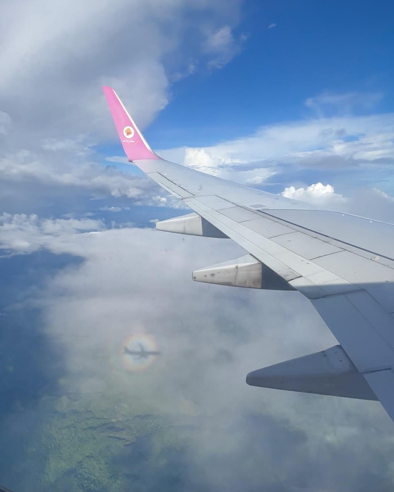
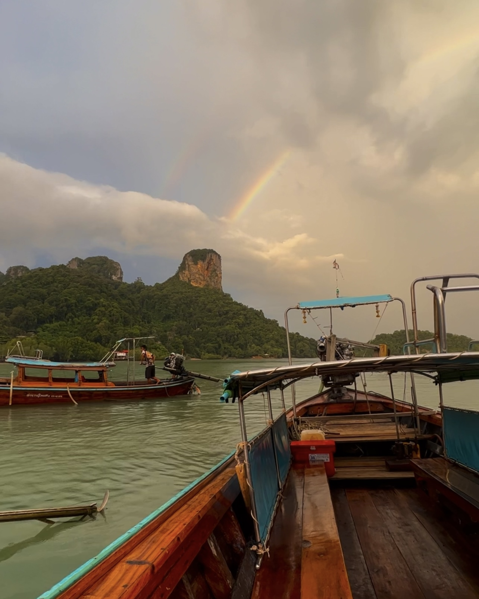
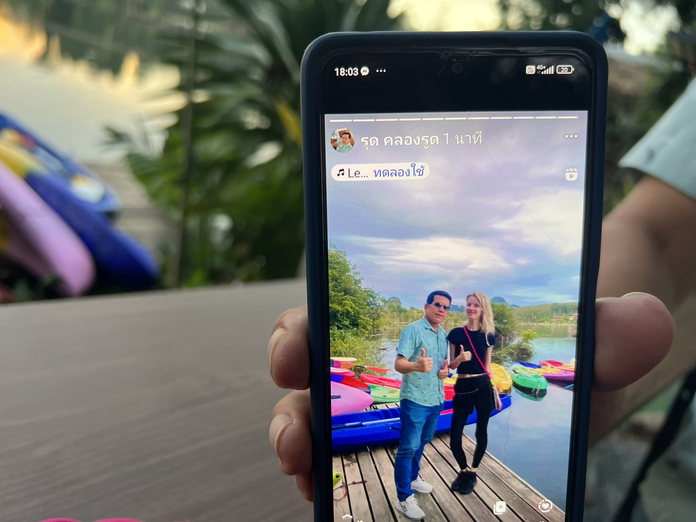
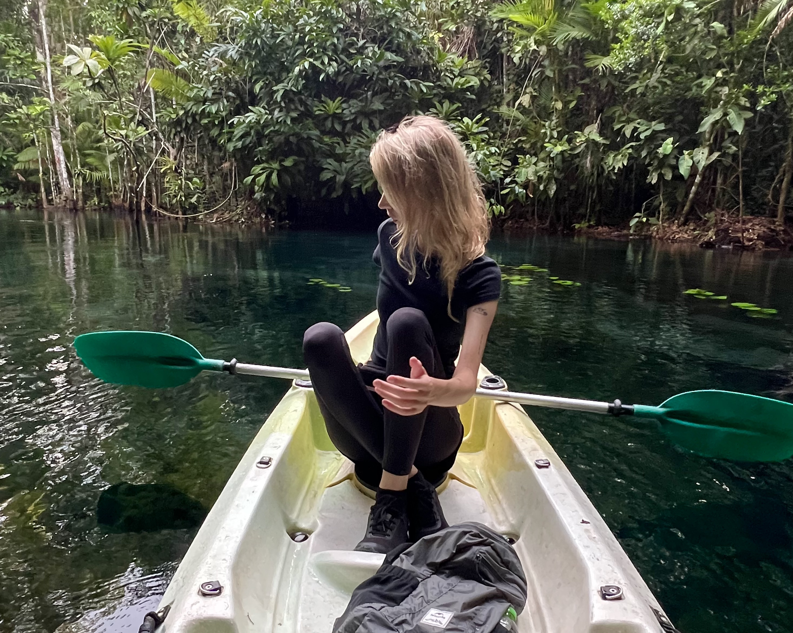

Вот вы уже запланировали путешествие, примерно определились с направлением, жильём, ознакомились с особенностями страны или региона. Как вдруг все ваши товарищи неожиданно решили не ехать. И тут возникает куча мыслей и вопросов. А стоит ли мне ехать одной? Что, если в незнакомом месте что-то пойдёт не так? Кто поможет, если возникнут проблемы? И смогу ли я вообще справиться со всем самостоятельно?
Со мной так бывало. Я сама собирала рюкзак и не понимала, как буду обитать на разных островах Азии, совершенно не подготовившись к путешествию. Моё решение было спонтанным и вынужденным: я поняла — сейчас или никогда. И, упаковав вещи первой необходимости наобум и не зная каких-то тонкостей, я улетела в ту самую неизвестность.


Я прилетела на остров, не забронировав заранее жильё. Деньги я заранее менять не стала, надеясь, что смогу спокойно расплачиваться картой. Но прямо в аэропорту банкомат зажевал её. Тут я оказалась в незнакомом месте без жилья, наличных и банковской карты.
Я оперативно стала искать жильё, объясняя ситуацию: сейчас я не смогу заплатить, но отдам деньги сразу через несколько дней, когда заберу карту. Тогда мне казалось, что это какая-то катастрофа, но в итоге я просто начала искать выход из положения.
Страх, который сопровождал меня, скорее всего, можно было бы назвать страхом отсутствия контроля. Но по ощущениям каждый раз, когда я сталкивалась с ситуациями не по плану, я постепенно обнаруживала, что умею гораздо больше, чем предполагала: строить маршруты, решать непредвиденные ситуации, выбирать места, где останавливаться на ночёвку, договариваться с местными по бытовым вопросам.
Но со временем я поняла, что не все ситуации нужно пытаться контролировать. Иногда можно просто довериться человеку, своим ощущениям и посмотреть, куда тебя приведёт этот путь.
Например, мне хотелось сплавиться на каяке, но уже вечерело, а ехать до моей локации было далеко, и я бы не успела по времени. На этом острове у меня оставалось жильё на одну ночь, а билет на другой день был уже куплен. И тут водитель мототакси предлагает мне изменить маршрут и добраться до другого места, которое находится ближе. Меня это смущает, но я решаюсь довериться ситуации: по интуитивным ощущениям он внушает мне доверие.
И то место, которое он мне показал, оказалось небольшим семейным бизнесом местных жителей в джунглях. После сплава всё семейство — муж, жена и их дети — пригласили меня на традиционный ужин. Не имея общего языка, мы понимали друг друга с полуслова. В тот день я узнала много фактов об их национальности и даже осталась у них на ночёвку. Мы и по сей день поддерживаем связь.


Скорее всего, если бы я тогда решила строго придерживаться первоначального маршрута, этой истории просто не случилось бы. И, наверное, именно такие моменты с каждым новым путешествием дают мне ощущение, что я всё могу. Не потому, что могу всё контролировать, а потому, что начинаю доверять себе, людям и самому пути.
Сейчас меня уже не так пугает, когда что-то идёт не по плану. Я понимаю, что неизвестность — это не всегда что-то плохое. Иногда именно за ней оказывается история, которую ты ещё долго будешь вспоминать.

.jpg)